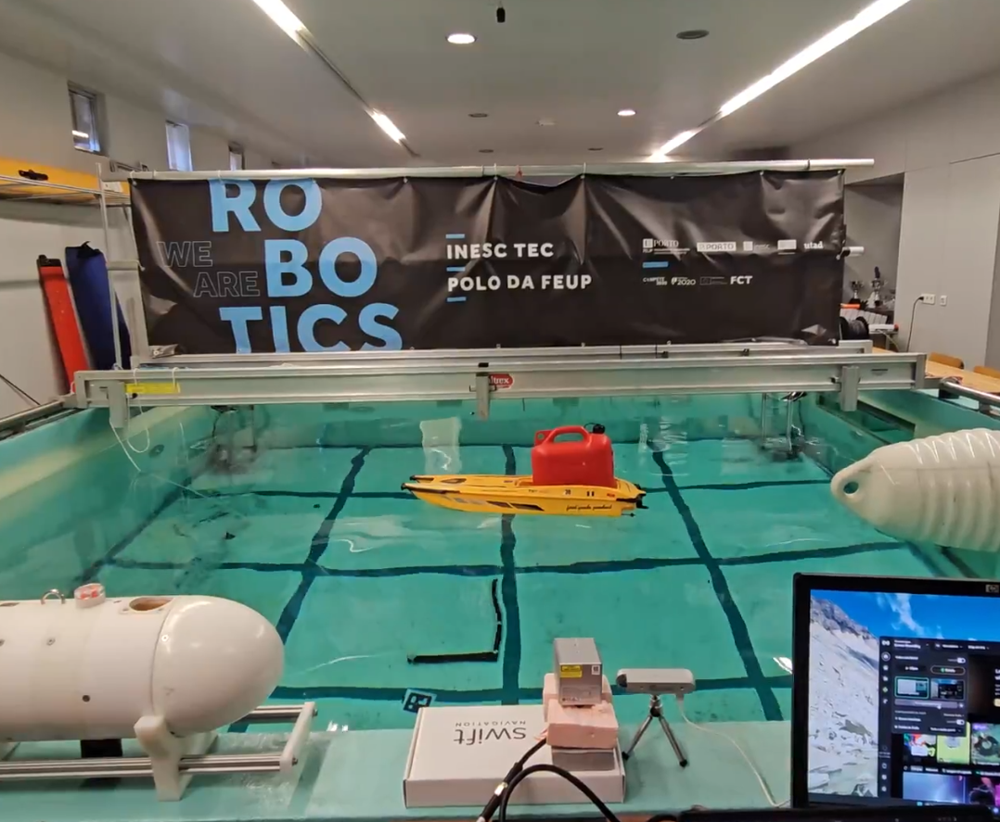
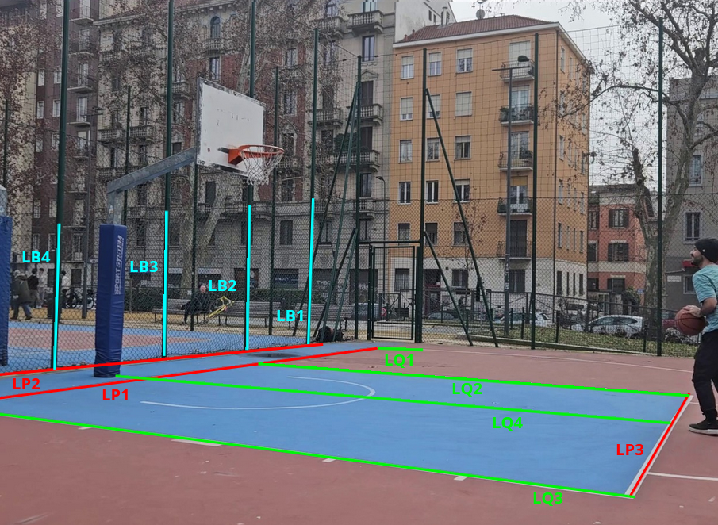
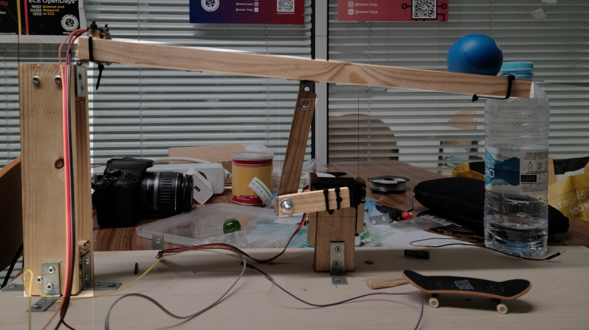
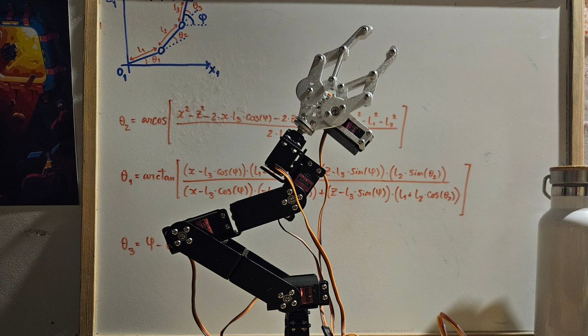
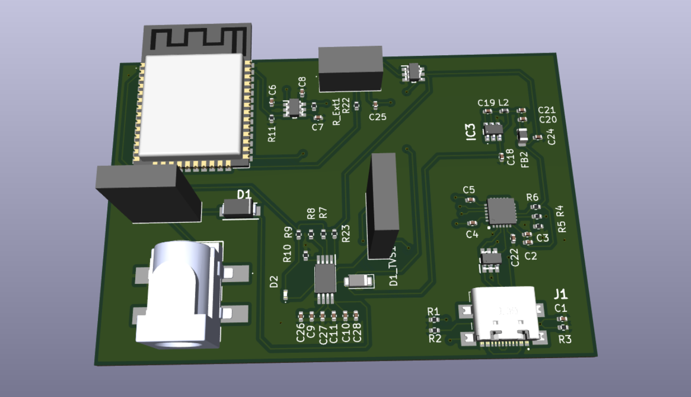
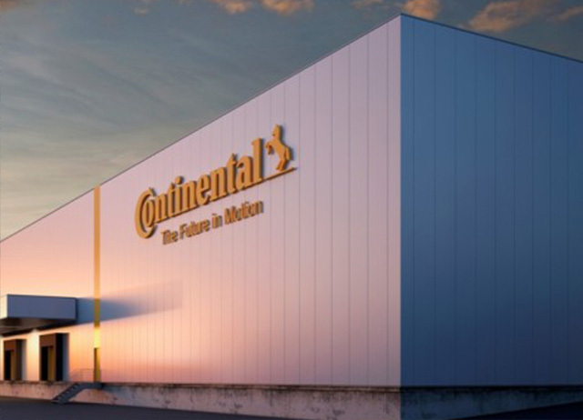
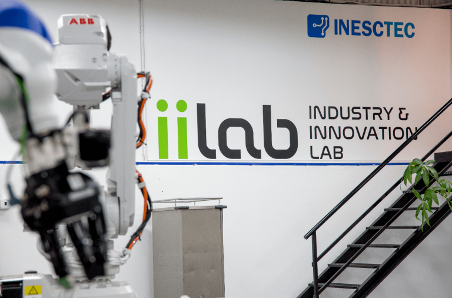

01 · Portfolio
My Work

Quadruped Spider Robot
Four-legged robot with 3 servos per leg (12 total), controlled by a Raspberry Pi Pico and a dedicated PWM driver. Implements multiple gaits — forward/backward locomotion, rotation, platform balance, and height adjustment.

Simplified Perception System for Autonomous Boat
Real-time obstacle detection and mapping using a persistent occupancy grid map. Lightweight enough for embedded hardware, with incremental updates distinguishing static and dynamic obstacles.

Basketball Shot Detection System
Fixed-camera video analysis system that automatically detects whether a basketball enters the hoop, using camera calibration and partial 3D trajectory reconstruction.

Ball Balancer — Self-Balancing Beam
A wooden beam that automatically balances a small ball on top of it using a single servo motor. A closed-loop PID controller continuously reads ball position and adjusts beam angle to maintain equilibrium.

Robotic Arm
6-degree-of-freedom robotic arm in active development, covering embedded electronics, forward/inverse kinematics software and in the future, the integration of a camera-based perception module to guide operations.

IoT Parking Spot Detector
Custom embedded system with a custom ESP-32-based PCB and an ultrasonic ToF sensor to detect whether a parking space is occupied. Readings are transmitted over Wi-Fi to an online web server for remote monitoring.

Capstone Project — Vertical Warehouse MES Integration
Integration of a vertical automated warehouse into a company's Manufacturing Execution System (MES) via OPC UA. Internship project completed at Continental Mabor.

BII at INESC TEC - CRIIS (iiLab)
Research initiation grant focused on process control, involving experimental work and the writing of a technical document based on the EDIBON-UCP Platform.